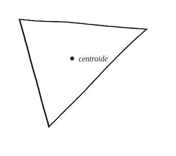
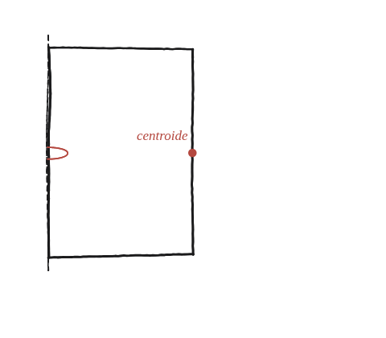

Com hauríem de definir el centroide d'una figura? Ho podem fer de manera que es compleixi el teorema de Pappus?

Què hem de produir
No un número: una definició. El teorema de Pappus diu que el volum generat en girar una figura plana al voltant d'un eix (que no la talla) és (àrea de la figura) × (distància recorreguda pel seu centroide). L'encàrrec és decidir què ha de ser "el centroide" perquè aquesta frase, tal com està escrita, surti certa.
Comença pel cas més fàcil de comprovar
Un rectangle, girat al voltant d'un dels seus costats, genera un cilindre —el volum del qual ja se sap calcular per una altra via. Quin punt del rectangle, multiplicat per 2π i per la seva distància a l'eix, reprodueix exactament aquest volum?
La construcció
El punt marcat "centroide": quina distància a l'eix, multiplicada per 2π, hauria de reproduir el volum del cilindre ja conegut?

Tancar-ho
Per al rectangle, el punt que fa funcionar el teorema resulta ser el seu centre —el centre de gravetat de tota la vida, on es creuen les dues diagonals—, que és a mitja amplada de l'eix. Compte amb la temptació d'agafar el costat oposat a l'eix: aquell és el punt més lluny de l'eix, no el punt mitjà, i donaria el doble del volum real.
Queda la definició general, i aquí cal resistir una sortida fàcil: definir el centroide com «el punt que fa que Pappus funcioni» no serveix, per dues raons. La primera és que no defineix cap punt —només fixa a quina distància ha de ser d'un eix concret, i això és tota una recta de candidats, no un punt. La segona és que buida la pregunta: si es defineix així, Pappus és cert per decret, i l'enunciat demanava justament si es pot definir de manera que surti cert.
La definició que sí que serveix no esmenta eixos ni volums: es talla la figura en molts trossos petits, tots de la mateixa àrea, i es pren la posició mitjana de tots ells. Aquest és el centroide —el punt on la figura, retallada en cartolina, es quedaria en equilibri damunt d'un dit.
Amb aquesta definició, Pappus deixa de ser una convenció i passa a ser una afirmació que es pot justificar. En girar, cada trosset d'àrea situat a distància r de l'eix recorre una circumferència de llargada 2πr i escombra un volum igual a (trosset)×2πr. Sumant-ho tot, el volum val 2π × (àrea total) × (la mitjana de les distàncies r). I aquesta mitjana de distàncies és exactament la distància del centroide a l'eix, perquè el centroide és la posició mitjana i, mentre la figura queda tota a una banda de l'eix, la distància a l'eix creix de manera uniforme a mesura que ens n'allunyem.
Això últim explica, de passada, per què l'enunciat de Pappus exigeix que l'eix no talli la figura: si la tallés, hi hauria trossos a banda i banda, les distàncies deixarien de comptar totes en el mateix sentit, i la mitjana ja no coincidiria amb la distància del centroide.
El centroide d'una figura es defineix sense esmentar cap eix: és la posició mitjana dels seus punts —el punt d'equilibri— i s'obté tallant-la en trossos petits de la mateixa àrea i fent-ne la mitjana. Amb aquesta definició, Pappus surt cert, perquè la distància del centroide a l'eix és la mitjana de les distàncies dels trossos, i cada trosset escombra un volum proporcional a la seva. Per al rectangle, aquest punt és el centre geomètric, no cap dels seus costats.
Comprovació
Rectangle de costats 2 i 3, girat al voltant del costat de llargada 3. El costat perpendicular a l'eix fa 2, així que el centre del rectangle és a distància 1 de l'eix. Pappus dona àrea(6) × 2π × distància(1) = 12π; el cilindre que en surt de veritat té radi 2 i alçada 3, és a dir π(2²)(3) = 12π. Coincideixen exactament. Si hagués sortit 24π, seria per haver posat la distància al costat de més enllà (2) en lloc de la distància al centre (1) —l'error exacte que calia evitar.
Aquesta definició —el punt que fa que Pappus funcioni— és el que fa possible aplicar el teorema a qualsevol figura, no només al rectangle: un cop decidida, es converteix en una eina reutilitzable.